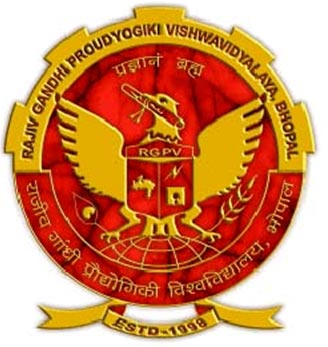

Education
"An innovative, self-motivated and versatile Master's student with extensive knowledgeof logical, analytical and programming skills along with hands-on experience in software,web and mobile application development."
Masters in Computer Science
Accomplished masters degree in computer science from California State University, Fresno.
Relevant Courses
- Structures of Programming Languages (CSCI 117)
- Programming Language Principles (CSCI 217)
- Advanced Database Systems (CSCI 226)
- Advanced Software Engineering (CSCI 250)
- Human-Computer Interaction (CSCI 253)
- Artificial Intelligence (CSCI 264)
- Thesis (CSCI 299)

Bachelor of Engineering in Computer Science
Accomplished bachelors degree in computer science from Rajiv Gandhi Technical Uiversity, India.
Relavent Courses
- Database Management
- Systems Architecture
- Software Engineering
- Theory of Computation
- Data Structure
- Network Management
- Network Security
- Compiler Designing
- ADA
- Object Oriented Programming